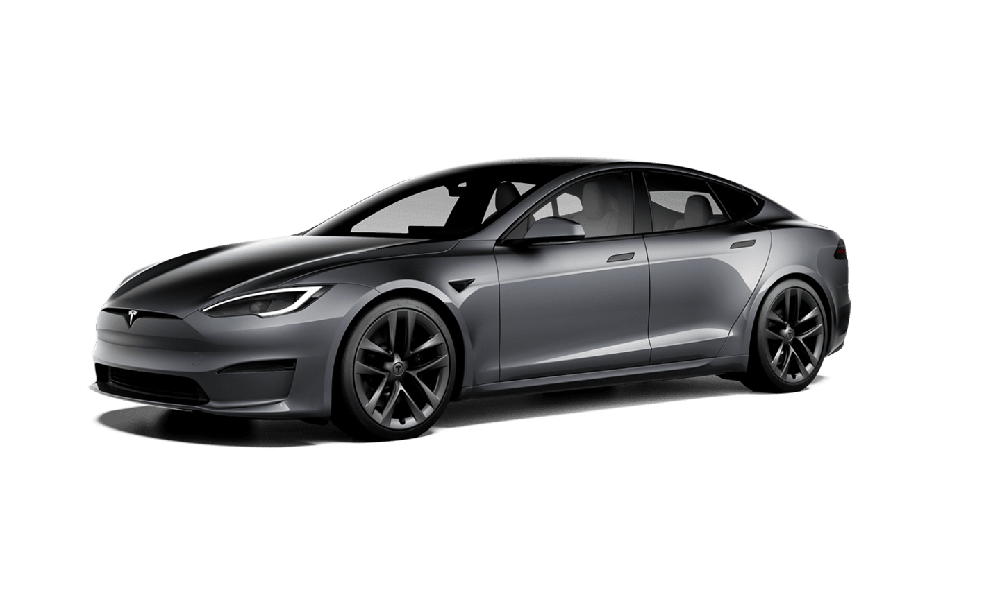

Tesla
Tesla, det banebrydende firma grundlagt af iværksætteren Elon Musk, har
revolutioneret bilindustrien med deres elektriske køretøjer. En af deres
mest bemærkelsesværdige modeller er Tesla Model S. Med sine elegante
linjer og imponerende præstationer er Model S blevet et symbol på
elektrisk kørsel og bæredygtighed. Model S er kendt for sin imponerende
rækkevidde, muliggjort af Teslas avancerede batteriteknologi. Den
elektriske motor leverer også hurtig acceleration og en stille og glidende
køreoplevelse. Interiøret i Model S er elegant og minimalistisk med en
stor pejskærm i midten af instrumentbrættet, der styrer mange af
køretøjets funktioner.

Teslas køretøjer er også kendt for deres autopilotfunktion, der muliggør
delvis autonom kørsel. Dette er et eksempel på, hvordan Tesla konstant
stræber efter at være førende inden for bilteknologi. Ud over biler er
Tesla også kendt for deres investeringer i solenergi og energilagring.
Deres vision strækker sig ud over at producere køretøjer og inkluderer en
bæredygtig energiinfrastruktur for fremtiden. Samlet set har Tesla ikke
kun ændret landskabet for bilindustrien ved at tilbyde elektriske
køretøjer med imponerende præstationer, men har også inspireret en
overgang til bæredygtighed og teknologisk innovation.